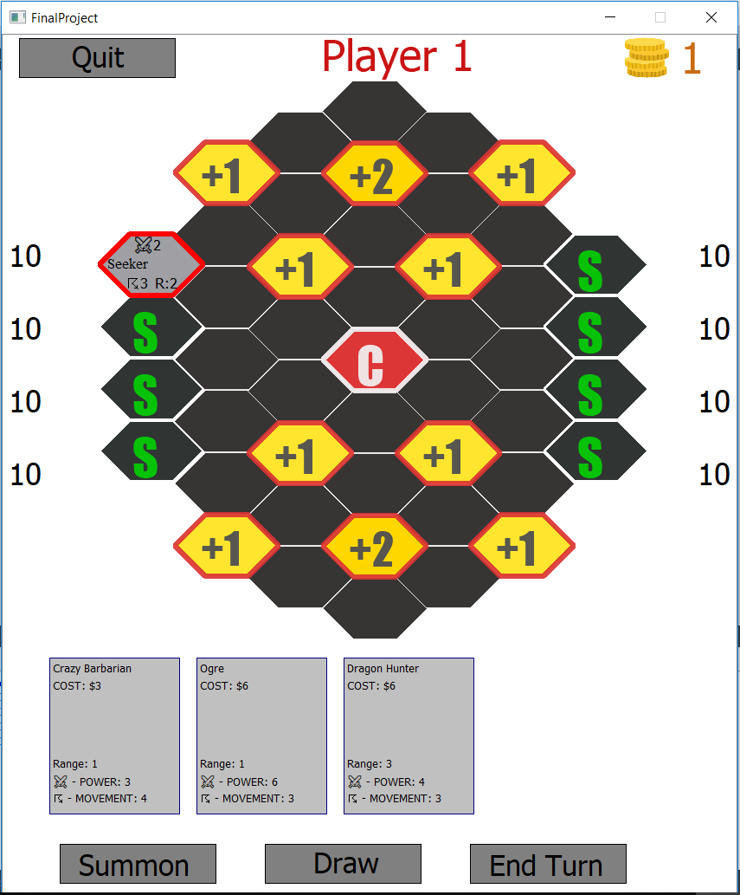
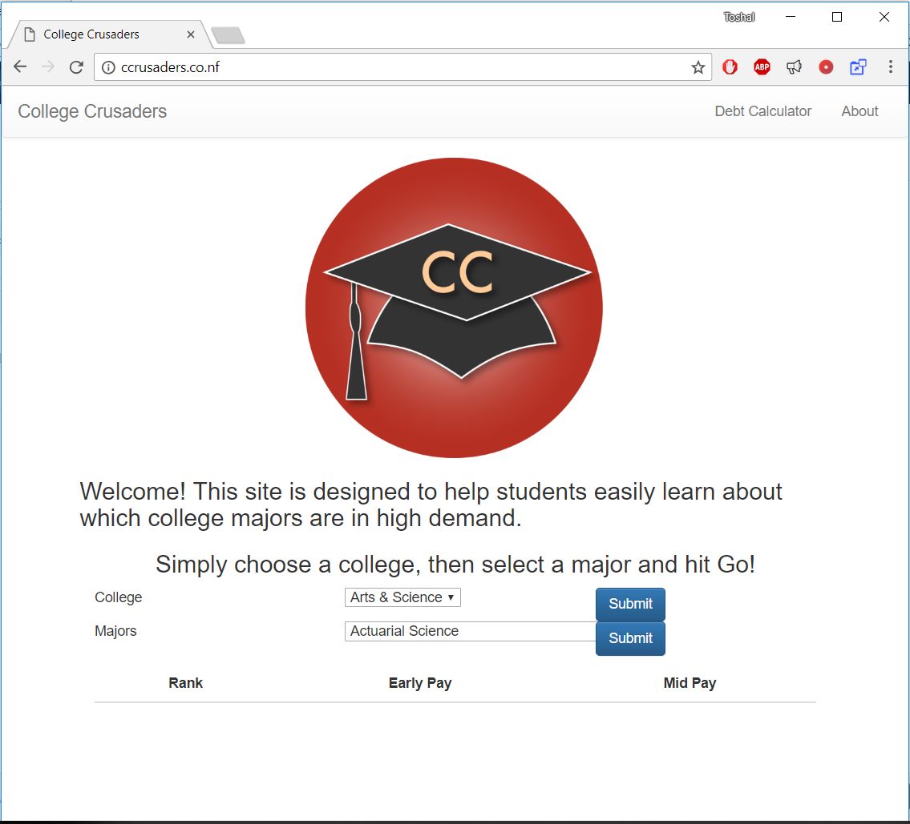

Toshal Ghimire
Software Devloper
C++ Sandbox
C++ sandbox is a combined repository of bunch of programs created by me. The repository includes things such as, Unit tests, OOP design patterns, GUI development and general programing techniques. Although everything here is done on C++, I could easly reproduce this in the other core langauages that I know.

Conays game of life
For my first GUI project I created the Conway's Game of Life using QT Creator. Additional features includes rolling a dice, simulation speed slider and a controllable red tile.

Original Board Game
Using the board game settlers of catan as inspirations, I created an original board game that incoroprates original creature cards, movements, and combat. This was created on QT cretor using OOP concepts and design patterns.

College Crusaders
This was a web app created for a class project. It query user input to display the early and mid careear salary for all college majors. This site is no longer active, but the github repository still exists.
Extra
Homework assignments from Data Science class that shows me using the full potential of python to do data analysis.
-
Content includes
- Cleaning and analyzing data
- Data visualizations
- Probability theory
- Estimate data given sample data
- Hypothesis testing
- Diagnostics of simple linear, multilinear, and logistic regression models